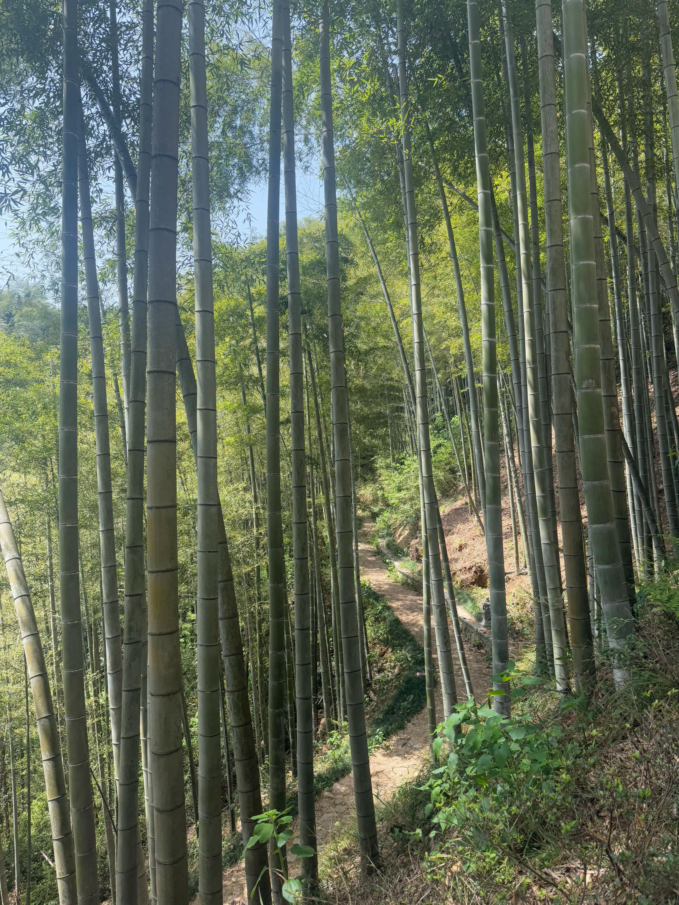

Spring Outing at Jingshan Temple
On April 10, all members of the laboratory went to Yuhang Jingshan Temple for a spring outing. After arriving at the Tongqiao parking lot, we found the hiking entrance under the guidance of enthusiastic villagers. The 2km hiking route is beautiful throughout, and the bamboo sea all over the mountain sways like green waves under the spring breeze. Geckos with blue tails appear from time to time along the way! Everyone was very surprised! Pakistani postdoctoral students were curious about the tea trees on the roadside. Yunxiu introduced them enthusiastically and picked fresh tender leaves to chew for a full mouthful of fragrance. This is the famous Jingshan Zen tea!


Everyone chatted while climbing the mountain, moving forward easily and happily all the way, and soon arrived at Jingshan Temple. We first tasted the delicious vegetarian noodles, and then visited this famous temple. Yuhang Jingshan Temple is located in Jingshan Town, Yuhang District, Hangzhou City, Zhejiang Province. It is one of the important temples of Chinese Zen Buddhism and enjoys the reputation of "the first of the five major Zen temples in Jiangnan". Jingshan Temple was first built in the fourth year of Tianbao in the Tang Dynasty (745 AD) by the eminent monk Faqin (Master Guoyi), and has a history of more than 1,200 years. During the Southern Song Dynasty, Jingshan Temple was listed as the first of the "Five Mountains and Ten Temples" of Zen Buddhism, surpassing famous temples such as Lingyin Temple and Jingci Temple, and became the center of Buddhism in Jiangnan. It was destroyed by war at the end of the Yuan Dynasty, rebuilt in the Ming Dynasty, and then underwent many repairs. Since the 1980s, Jingshan Temple has been gradually restored and has now become an important Buddhist holy place and tourist attraction. Jingshan Temple is also one of the birthplaces of Japanese tea ceremony. During the Southern Song Dynasty, the Japanese monk Enni Benyuan brought the Zen tea culture of Jingshan Temple back to Japan, which evolved into the Japanese tea ceremony. Today, the Jingshan Tea Banquet has been listed as an intangible cultural heritage of mankind, showing the cultural tradition of Zen and tea integration.